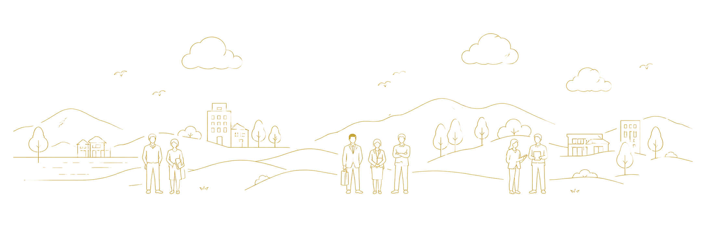
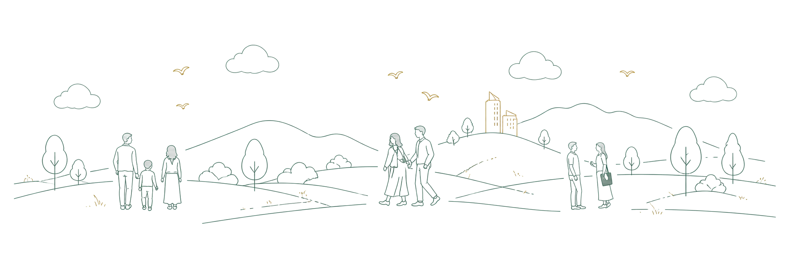
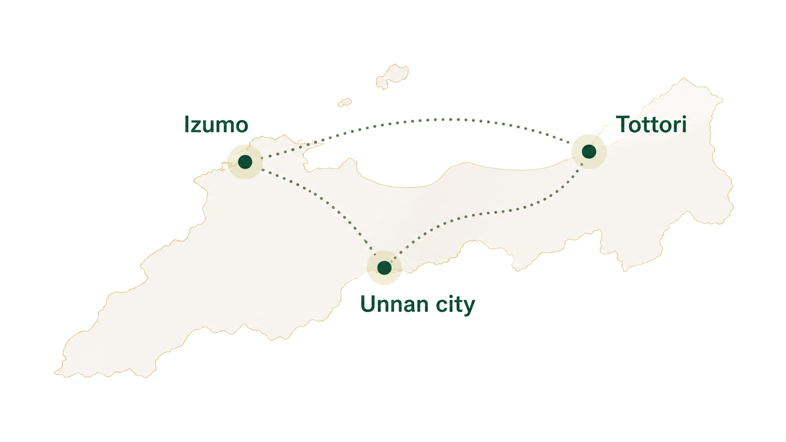
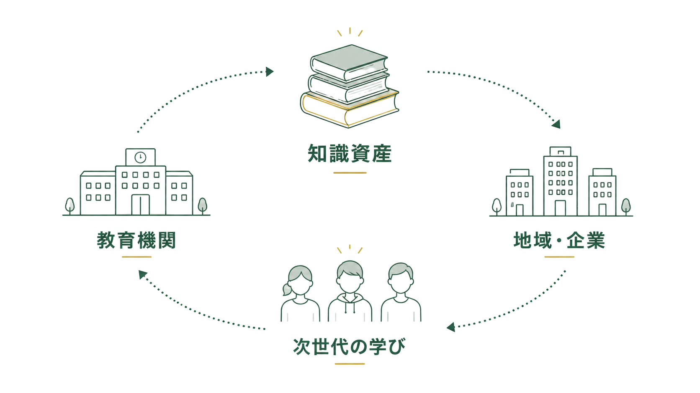
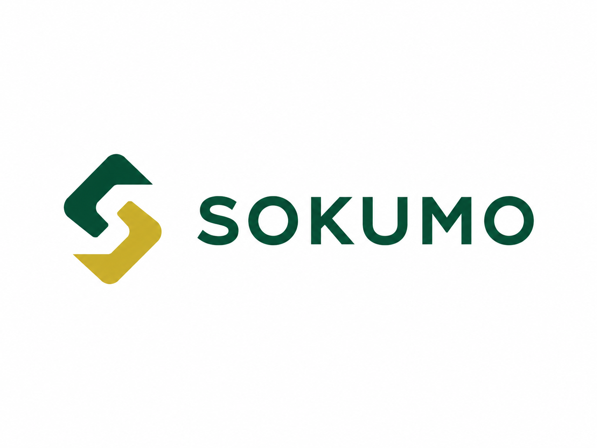

建設業支援
施工管理・図面管理の効率化で、現場の生産性と品質を向上。働き方改革を支援します。
会社紹介
こころと時間の余裕を生むDXを実装する

私たちの理念
私たちは、現場の知恵とデジタルの力で、
人の時間とこころに余裕を生む社会をつくります。
一人ひとりが本来の価値を発揮できる環境を整え、
持続可能で、やさしい仕組みを未来へつなぎます。


地域への貢献
出雲・鳥取・雲南市を中心に、地域の企業・行政・教育機関と連携し、産業の活性化と持続可能な地域づくりに貢献します。


DXの取り組み
施工管理・図面管理の効率化で、現場の生産性と品質を向上。働き方改革を支援します。
生産計画・在庫・工程管理の 最適化で、ムリ・ムダ・ムラを なくし、利益体質へ導きます。
行政業務のデジタル化を支援し、住民サービスの向上と職員の業務効率化を実現します。
教育へのビジョン
デジタルと探究を軸に、子どもたちが
自ら未来をつくる力を育む環境をつくります。
現場で得た知見を体系化・共有し、
地域と次世代の知識資産として循環させます。

これまでの歩み
ものづくりの現場で、設計・開発に携わり、技術と課題解決の基礎を培いました。
多くの現場で課題を発見し、業務改善・仕組み化を通じて成果を積み重ねてきました。
業種・業態を問わず、業務のデジタル化を支援し、経営と現場をつなぐ伴走を行います。

現場の知見をもとに、業務をシンプルにするプロダクト「SOKUMO」を開発しました。
地域に根ざし、全国の中小企業・自治体へと、価値ある仕組みを広げていきます。